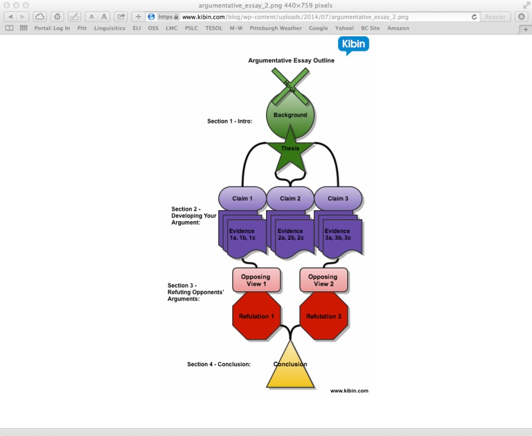

Argumentative Essays
What is an argument? There are two explaination by Bing. 1) an angry disagreement between peoplep; a discussion or debate between people with different views, opinions, etc. 2) a reason or set of reasons that you use for persuading other people to support your views, opinions, etc.
What is Argumentative Essays? 1) also called persuasive essays. 2) expresses opinion about a debatable issue. 3) author takes a position and persuades the reader to agree with his/her opinion. 4) author uses strong, logical reasons to support argument.
Main Section
Main Section concludes four parts: Introduction, Claims(Supporting Arguments), Opposing views(Counterargument) with refutations, Conclusion
Introduction
- hook introduces the issue
- background information:
- gives broader picture of the issue
- tells why issue is important
- can give details about the history of the people involved, what they want, and how it affects them
- thesis statement clearly states the author’s point of view
Body
- reasons for author’s point of view(claims)
- supporting details(facts, examples, statistics, definitions, causes, effects, quotations, anecdotes or questions)
- refuting opponents’ views
- opposing view is presented(a counterargument)
- (option) express some agreement with opposing view(concession)
- show evidence that author’s argument is stronger(refutation)
Conclusion
- restates the thesis argument
- can end with a prediction, warning, or other type of comment
- may state the general issue in a broader context
Structure

More details
Intoduction
Thesis Statement
- Location: Usually at the end of the introduction
- Length: One complete sentence
- Purpose: Summarizes the entire essay
- Parts: Topic(theme/subject matter) + controlling data(defines purpose of the essay)
- Example: The economic crisis could have been avoided with banking regulations
- For the argumentative essay, the thesis statement must be arguable, which means there should be two sides.
- AI should be allowed in creating work for art competitions.
- AI should not be allowed in creating work for art competitions.
- What is wrong with using the following phrases in an argumentative essay thesis statement?
- has benefits = is beneficial/useful
- has many benefits = is very beneficial/ useful
- has a tremendous number of benefits = is tremendously beneficial useful
- We need some kind of comparative statement
- There are more benefits than disadvantages.
- The advantages outweigh the disadvantages.
Hook
- Location: Begins introduction
- Length: 1 or 2 interesting sentences
- Purpose: Gets the reader’s attention, stimulates curiosity
- What/how can you get the reader interested? What can you use to “hook” the reader/
- a quotation from literature or a famous person
- a statistic or fact
- must cite where you got the info from
- a meaningful question
- get the reader to start thinking about the topic
- an unusual perspective
- teaches the reader something new.
- a metaphor
- poetically calling something something else
- a dilemma
- situation in which a difficult choice has to be made between two or more alternatives, especially equally undesirable ones
- a personal anecdote
- a very short interesting story about a real event and a real person
Thesis Statement
- Location: after the hook
- Length: 2-3 sentences
- Purpose:
- gives broader picture of the issue
- tells why issue is important
- can give details about the history of the people involved, what they want, and how it affects them
Example
- Hook: Henry Paulson’s expression turned to horror as he looked down at the numbers. He suddenly realized that the market was on the verge of collapse.
- Background: In September 2008 the banking system in the United States nearly collapsed, leading to what many considered to be the worst economic crisis since the great depression of the 1930s.
- Thesis Statement: The economic crisis could have been avoided with banking regulations.
Claims
- statement the author makes to support the thesis statement
- Each claim must be supported with evidence
- The sentences stating your claims from your outline (A, B, C) should be the topic sentences of your paragraphs in your essay.
- Add transitions
Opposing View
- opposing point of view to the author’s
- author shows understanding of opposing point of view by including it
- Concession
- author agrees that the opposing point of view is valid, but emphasizes how author’s argument is still stronger
- Refutation
- author’s response to the opposing view
- author shows why the opposing view is weak and the author’s position is strong
- may also address doubts that the reader might have
Conclusion
- Location: Last paragraph in the essay
- Length
- 3-5 sentences (in our assignment)
- should be the shortest paragraph in the essay
- Purpose: restate thesis with different words
- Include a final thought (advice, warning, prediction)
Outline -> Essay
- A, B, and C -> Topic sentences for body paragraphs
- The sentences you wrote for A, B, and C in your outline will become the topic sentences for your body paragraphs.
- That means these sentences should begin each paragraph.
- Do not add additional information between the introduction and your first body paragraph.
- If you need to provide additional background information, then you need to include it in the introduction and revise the introduction so that it is not too long (longer than your body paragraphs).